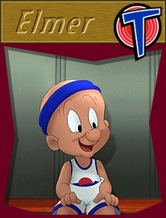

© 1996 Warner Bros.
© 1996 Warner Bros.
ElmerBasking in residual glamor from The Rabbit's stunning success was the hunter who first pointed that infamous rifle in his face. Elmer Fudd, Bugs' foil in A Wild Hare, became part of the Bugs Bunny mystique right from the beginning, and began a long cartoon career as journeyman stooge, dupe, and second banana at the instant he was chosen to have the words, "What's up, Doc?" directed at him--a classic case of being in the right place at the right time
Elmer Fudd, like Bugs Bunny, seemed to crystallize in A Wild Hare, going through various permutations later, only to settle back into a form remarkably like the one he'd had his first success in.
Without changing the basic nature or concept of the character, his directors and animators finally developed him into a creature capable of great elasticity, especially in Hare Remover and Hare Tonic. He eventually reached the point where his hat could become as expressive as Bugs' ears if the occasion warranted it, hopping, bouncing, and twirling around when his face and body were incapable of communicating all of his inner turmoil.
© 1996 Warner Bros.